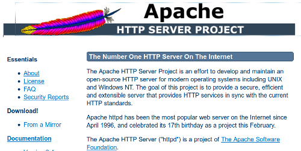
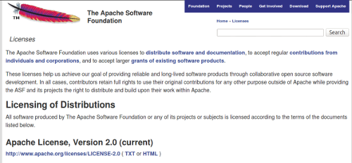
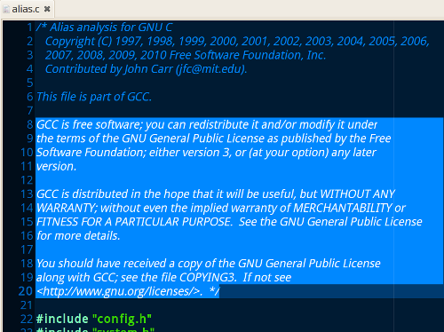
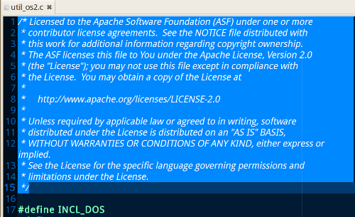
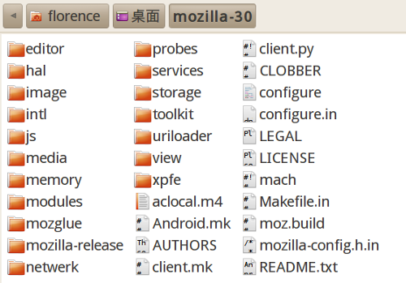
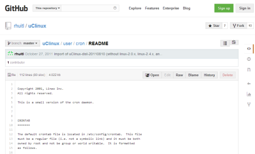
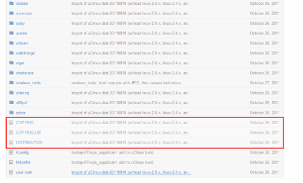

感謝您對「自由軟體鑄造場」的支持與愛護，十多年來「自由軟體鑄造場」受中央研究院支持，並在資訊科學研究所以及資訊科技創新研究中心執行，現已完成階段性的任務。 原網站預計持續維運至 2021年底，網站內容基本上不會再更動。本網站由 Denny Huang 備份封存。
也紀念我們永遠的朋友 李士傑先生（Shih-Chieh Ilya Li）。
也紀念我們永遠的朋友 李士傑先生（Shih-Chieh Ilya Li）。
正確尋找自由開源軟體的授權資訊
建立日期 2014-06-26 03:34 最近更新在 2014-06-26 15:07
利用自由開源軟體元件來開發自己專案的好處在於，使用者只要能了解所取用元件的授權方式，便可以毋須重新撰寫，而逕予取用這些元件，作為新專案的基石，並在既成的成果上，據以更深入的開發自己所需要的功能！然而，由於許多自由開源軟體的授權元件，開始時多是由網路志工和社群成員自發性的投入撰寫，所以雖然開發者本身，非常願意透過某一個選定的自由開源軟體授權方式來傳遞和分享這些程式碼，但卻極可能在編撰的過程中，未能明確地標示相關程式碼的授權資訊，也或者標示的方式，隨著專案與開發者的不同而有所改變，對於不少使用者來說，找到正確的授權資訊並據以安心的利用，並不是一件容易的事情。但是在這些看似雜亂的標示中，其實仍然有一些基本規則可以依循。本文會就辨識授權資訊的基本規則加以闡釋，並針對常見的問題與標示不清的狀況加以說明，讓讀者可以大要了解，如何在茫茫的軟體程式碼與各項說明資訊中，找到特定自由開源軟體元件正確的授權資訊！【最能簡易辨識出授權資訊的兩個地方】
一般來說，不同的自由開源軟體專案，其標示授權資訊的方式可能或多或少有些差異，但最簡易能進行辨識的兩個地方，應該就是專案的開發或下載網站，以及個別檔案開端之處 (header file notice) 的簡要授權聲明了。
1、專案網站
有些自由開源軟體專案會在網站入口首頁上，載有簡短的文字，說明該專案是採用哪一份條款來授權，又或者即使沒有這樣的說明文字，但是會放上顯目的 "LICENSE" 或是 "LEGAL" 的分頁，搜尋者只要按壓 [Ctrl + F] 查找這二個字串，就有機會快速查找並點選進入這個分頁中，進一步瀏覽到該專案詳細的授權相關資訊。

▲ 圖1：在 Apache Http Server 這個專案首頁的左側選單中，可以明顯地看到 "LICENSE" 的連結（註一）。
一般來說，運作上較具規模或有較長歷史的自由開源軟體專案，都會有專門的推廣網站。這些網站不僅提供其不同版本的下載連結與技術說明文件，更會連帶設有分頁，專章的介紹其授權模式以及授權資訊，甚至有不同時期、不同版本授權沿革的紀錄。

▲ 圖2：進入到 "LICENSE" 頁面後，可以看到詳細的授權解說資訊（註二）。
2、個別源碼檔案的開端之處
而有些自由開源軟體專案，會習慣在個別源碼檔案一開始的地方，加上簡短的授權說明文字，這樣即便使用者拿到的不是該專案裡所有的程式碼，而是個別檔案，也可以因為開頭的說明文字，而了解到這個檔案是採用什麼樣的授權模式。採行這種作法的自由開源軟體專案以 MIT、BSD 類別的專案程式為最多，因為其授權條款的文字極為輕簡，所以有時開發者會把 MIT、BSD 授權全文直接插入個別源碼檔案的開端之處，作為一個授權指引的正式聲明。

▲ 圖3：GCC v. 4.7.4 中的一個源碼檔案開端之處，在著作權聲明之後，有著三段授權資訊的說明文字。
然而，並不是說此種插入檔頭的聲明模式，是必然會發生在各種授權類型的程式專案裡，或者不會發生在 MIT、BSD 以外的授權類別。如上圖所示，GPL 類別的授權專案可能也會有這樣的處置。所以應該是說，有時在一個大的自由開源軟體專案裡，此種在檔案檔頭插入授權聲明與相關條款的方式，是一種變體的強化授權說明。透過這種方式，如果後續的修改者只是單單取用個別檔案，則該檔案的授權資訊，也不會因為被單獨抽離出來使用而無可考究。所以，直接觀察個別源碼檔案的開端之處來探求授權資訊，是一個簡便可行的方式，也可說是原始撰寫者穩固保存相關授權資訊的強化聲明方式。因為如果個別檔案的檔頭裡，確實有這樣的授權註解文字，則原則上該檔案便是以述明的授權方式來傳遞。

▲ 圖4：Apache Http Server 2.4.9 中的一個源碼檔案，在開端之處即有簡要的授權說明，並且導引使用者可以到網站上閱讀 Apache-2.0 的授權條款全文。
【抽絲剝繭式捉爬出正規的授權資訊】
不過並非所有的自由開源軟體專案，都會在專案網站上，或是個別的源碼檔案中，明確地表述出授權相關資訊，因為歸根究柢，依據各類自由開源軟體授權條款的相關規則，最正規的授權資訊標示方式，其實是在源碼檔案的根目錄下，建立相關的電子說明檔案。所以，前述兩個簡易的辨識方式，可說是授權辨識上的錦上添花，而若使用者無法在這兩個地方查找到相關資訊，便必須要依照下列的步驟，查看個別自由開源軟體專案，其程式源碼的根目錄中，是否有夾帶的授權資訊說明檔。
許多自由開源軟體專案在其源碼檔案的第一層目錄中，會將授權資訊寫在電子化的純文字檔中，像是 COPYRIGHT、COPYING、LEGAL、LICENSE、README 等名稱，都是常見可能儲放授權資訊的檔案，因此建議可以先找尋程式源碼目錄中，是否有這些名稱的電子文字檔。多半的狀況是，使用者所需要確認的授權資訊，皆內藏在這些檔案的說明文字之中。此外，有些檔名是上述原則的變體，例如：MIT-LICENSE、COPYING.RUNTIME 等等，這些變體的檔名通常也指示該檔案中，內儲使用者所需要的授權資訊。
另外，依照個別授權條款細部的指示，不同授權類型的專案有其慣式的授權說明檔案組合：
1、README / LEGAL + COPYING
GPL、LGPL 授權相關專案，"README" 檔說明授權配置，"COPYING" 檔內嵌授權條款全文。採用 GPL、LGPL 這兩類授權條款的自由開源軟體專案，常常會有授權說明文字，放在 README 這個檔案裡，對使用者精簡說明這個專案的授權狀況，並述明各檔案、元件之間授權相容的配置關係；而若是使用者想要了解詳細授權資訊內容的話，亦得以在 README 檔案的指示下，開啟 COPYING 這個純文字檔，其中就會有授權條款的全文內容（註三）。
以 GCC v. 4.7.4 為例，整體來說是採用 GPL-3.0 授權，但是其中有些元件是採用 GPL-2.0、LGPL-2.1、LGPL-3.0 授權，或是在 GPL-3.0 的授權之上附加額外的條款 (GNU General Public License v 3.0 with GCC Runtime Library exception)，因此在 GCC v. 4.7.4 源碼檔案的第一層目錄中，可以看到 COPYING、COPYING.LIB、COPYING.RUNTIME、COPYING3 與 COPYING3.LIB 等純文字檔，裡面分別就是這些授權條款的全文內容。可知，隨著所採用的條款不同，這個 COPYING 檔名也會有相應變化，常見的 GPL、LGPL 條款與版本號的相對應檔名如下所示：
- GPL-2.0 -> COPYING
- GPL-3.0 -> COPYING3
- LGPL-2.1 -> COPYING.LIB
- LGPL-3.0 -> COPYING3.LIB
▲ 圖5：GCC v. 4.7.4 專案座落於根目錄下的各個 COPYING 檔案。
由於這類的專案以 GNU 計畫下的專案為最主要，因此若是要尋找 GNU 計畫相關專案的授權資訊，建議就是依循上述的模式進行查找，而有時此類專案的 "README" 檔案，會被改以 "LEGAL" 檔案來取代，故若是源碼根目錄下的 README 檔案裡，沒有發現任何授權說明，便可以改觀察是不是另有 LEGAL 檔案，有另行獨立登載元件授權狀態的相關資訊。
2、NOTICE / LEGAL + LICENCE
MPL、Apache-2.0 授權相關專案，"NOTICE" 檔說明授權配置，"LICENSE" 檔內嵌授權條款全文。以採用 MPL 系列條款授權的 Mozilla 計畫為例，旗下專案的 README 檔案只用來儲放單純的技術資訊，授權資訊的入口檔案則是 LICENSE 這個說明檔，該檔案裡面會告知了使用者可以如何進一步看到詳細的授權資訊，依循著這些資訊，使用者就可以在網路上或是另外開啟一個 html 頁面，閱讀到 MPL 授權條款詳細的授權資訊。

▲ 圖6：Firefox v. 30 源碼目錄中 LICENSE 純文字檔是授權資訊的入口檔案。
要注意的是，Mozilla 計畫專案的源碼目錄中，可能會額外看到一個 LEGAL 的純文字說明檔案，這個檔案是 MPL 系列條款，在授權條款內容裡有特別規定到的，該檔案裡存放了授權資訊以外、其他相關的法律訊息，以 Firefox v. 30 為例，其 LEGAL 檔案說明了該版本的 Firefox 符合美國當地法律的狀況。雖然這部份的內容並非全然是授權資訊的說明，但若是使用者想了解與該專案相關的法律資訊，此一 LEGAL 檔案的內容，就是您需要瀏覽的對象。
【其他標示不清的狀況須透過論理來分析】
以上說明的是，自由開源軟體專案個別授權資訊經常會出現的地方，不過有時候尋找授權資訊並不是那麼容易的事情，部份特例使用者會發現，在 SourceForge、GitHub、Google Code、OpenFoundry 這些自由開放源碼專案託管平台上的專案，花了許多時間查找，卻也有沒辦法在上述三個地方找到授權相關資訊的情形，又或者即使找到了，但是相關聯的描述並不精確，此時，就必須透過論理的方式來作進一步的分析。

▲ 圖7：cron 這個提供程式源碼的元件在其檔頭查找不到任何授權相關的資訊。
以託管於 GitHub 上 uClinux 這個專案下個別的元件 cron 為例。使用者在該元件的任一檔頭或是說明檔裡，都找不到相關的授權資訊（註四）。而雖然某些軟體專案，明示其內的 cron 是採用 MIT License 授權，然而 MIT 授權的原始元件，嗣後也有可能被改作，轉以具 Copyleft 特性的 GPL 或 MPL 等授權方式來散布，故此一資訊，並不能夠百分之百保證，上圖架構中的 cron 專案，一樣是採用 MIT License 來授權釋出。而當個別開源元件，無法在其相關檔案裡查找到任何授權資訊時，依照授權條款相關的標示義務以及論理邏輯，使用者就必須要向上跨越至上層目錄來進行查找，因為一般授權標示上的原則是，根目錄下的授權說明檔案，會涵括各個子目錄檔案的授權狀態，而子目錄下的授權說明檔案，則會進一步涵括各個子子目錄檔案的授權狀態。所以 cron 這個元件，既然在其本身所在的目錄無法查找到授權資訊，那就是向上一層進行追根究柢的細部查閱。

▲ 圖8：cron 上層子目錄的資訊，披露其應為 GPL-2.0 或 LGPL-2.0 授權的自由開源軟體元件。
在 cron 元件往上一層的地方，可以發現名為 DISTRIBUTION 的純文字檔，裡面說明（註五）其下級目錄中的個別元件，皆為自由開源軟體，有些是採 GPL 授權、有些採 LGPL 授權，或採行更為寬鬆的 BSD 授權。然而此一宣示，仍然無助於使用者精確的鎖定 cron 這個專案究竟是採哪一種授權方式。故更進一步，應參照此一上層目錄中所附的兩個授權條款全文檔案來進行分析，其一檔案為 COPYING，內載 GPL-2.0 授權條款的全文，其二檔案為 COPYING.LIB，內載 LGPL-2.0 授權條款的全文，所以邏輯分析上，此處的 cron 是採 GPL-2.0 或 LGPL-2.0 其中一個方式來授權，而基於 LGPL-2.0 在授權轉換上能匯入並相容於 GPL-2.0，故較為嚴謹而不會產生爭議的解讀方式，就是將此處的 cron 認定為以 GPL-2.0 的授權方式來提供，會是最妥當的方式。
最後，參照 uClinux 專案最上層目錄的 COPYING 檔案，發現整個 uClinux 專案原則上亦是採 GPL-2.0 來授權使用，此時更能確定將其中 cron 元件的授權模式認定為 GPL-2.0，是不會產生任何授權衝突的使用方式！此一示範給讀者了解的，是依循自由開源軟體授權標示義務和原則所進行的分析確認模式，但倘若此一方式亦無法正確辨認出個別專案或元件的授權方式，則最後實際可採行的方法，只能透過可以得到的聯繫資訊，逕予詢問該專案的原始開發作者，才有辦法得到可資確認的授權相關資訊了。
註一：Apache Http Server 專案首頁：https://httpd.apache.org/。
註二：ASF 授權資訊的網頁：https://www.apache.org/licenses/。Apache Http Server 專案是Apache軟體基金會 (Apache Software Foundation, ASF) 所託管的專案，因此依照 ASF 的規定，與其他自行開發或受託管的專案一樣，目前都是採用 Apache-2.0 來授權，因此這個頁面乃是 ASF 統一的授權資訊說明頁面。
註三：由於 GPL、LGPL 等條款規定使用者在散布程式的同時，有著散布授權條款全文的義務，僅是提供條款全文所在的網址並不符合這項義務規定，因此 COPYING 檔名蘊含有「請一定要記得複製這個檔案」的意思，用來提醒使用者，不要忘了散布授權條款的全文內容。
註四：此元件的連結網址如右：https://github.com/rhuitl/uClinux/tree/master/user/cron，其程式碼慣常習見於許多自由開源軟體專案裡，但多缺乏明確清楚的授權相關資訊。以 Wikipedia 提供的資訊來看，該元件散見採用在不同的自由開源軟體專案中，有些專案為其標示 MIT License 授權，而有些專案則為其標示 GPL-2.0 授權。
註五：The entire contents of this archive are under "free" distribution licenses, either GPL, LGPL (for the libraries), or BSD (in a few places.) Enjoy.
專欄總覽


自由軟體鑄造場 製作 最佳瀏覽狀態：IE7或Firefox2.0以上 (建議使用Firefox) ‧ 解析度1024*768
E-Mail：contact@openfoundry.org Address：台北市南港區研究院路2段128號 中央研究院資訊科學研究所 . 隱私權條款. 使用條款
E-Mail：contact@openfoundry.org Address：台北市南港區研究院路2段128號 中央研究院資訊科學研究所 . 隱私權條款. 使用條款